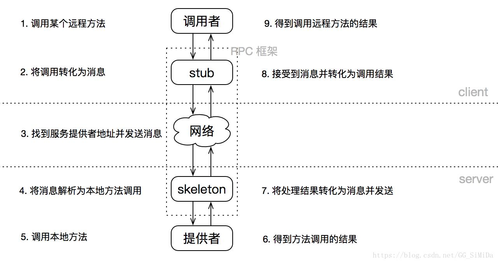
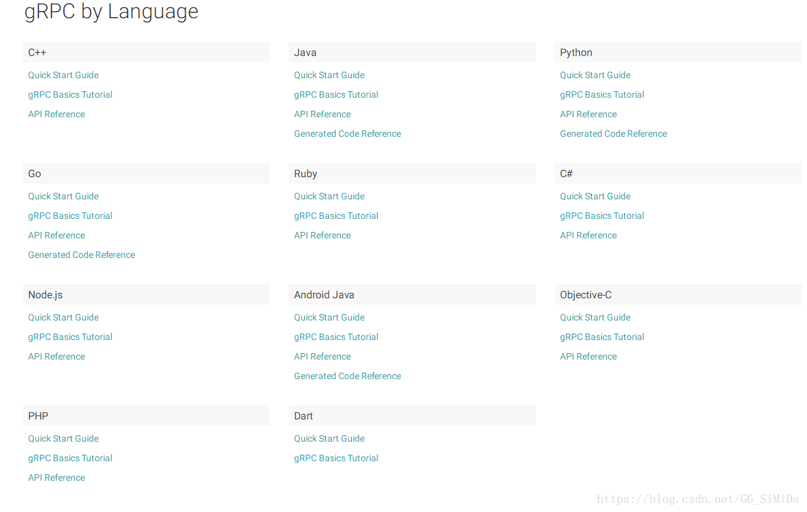
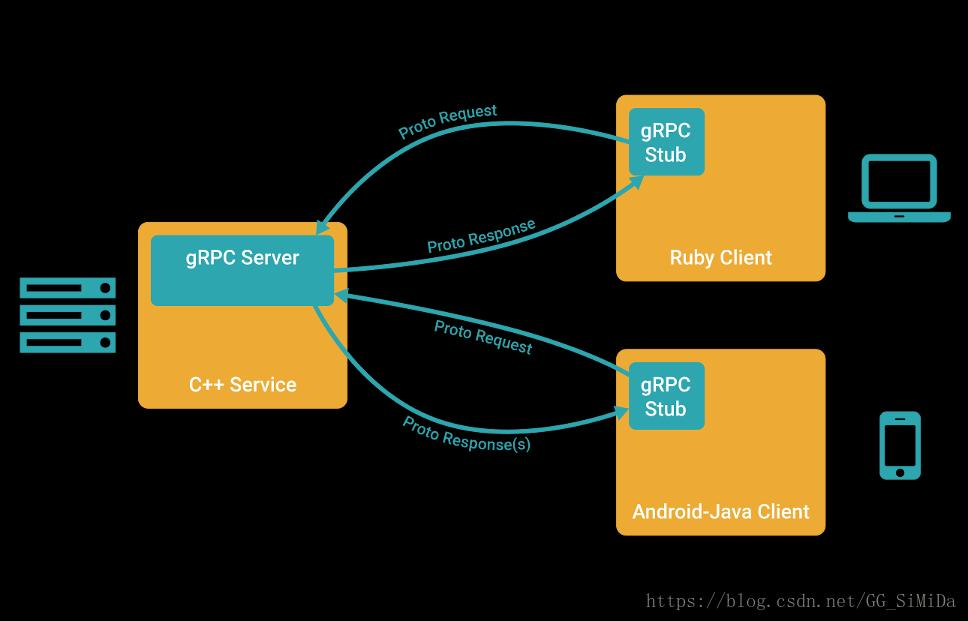

在分布式系统开发中，进程之间经常需要通过网络进行远程通信，RPC 就是让这一过程像调用本地函数一样简单的技术。本文先梳理 RPC 的基本原理，再对 gRPC 框架做整体介绍，最后演示如何编译 gRPC 源码，并用 C++ 跑通一个简单的登录/登出示例。
RPC 远程过程调用
RPC（Remote Procedure Call Protocol）——远程过程调用协议，它是一种通过网络从远程计算机程序上请求服务，而不需要了解底层网络技术的协议。RPC 协议假定某些传输协议的存在，如 TCP 或 UDP，为通信程序之间携带信息数据。在 OSI 网络通信模型中，RPC 跨越了传输层和应用层。RPC 使得开发包括网络分布式多程序在内的应用程序更加容易。
RPC 采用客户机/服务器模式。请求程序就是一个客户机，而服务提供程序就是一个服务器。首先，客户机调用进程发送一个有进程参数的调用信息到服务进程，然后等待应答信息。在服务器端，进程保持睡眠状态直到调用信息的到达为止。当一个调用信息到达，服务器获得进程参数，计算结果，发送答复信息，然后等待下一个调用信息。最后，客户端调用进程接收答复信息，获得进程结果，然后调用执行继续进行。

gRPC 简介
gRPC 一开始由 Google 开发，是一款语言中立、平台中立、开源的远程过程调用（RPC）系统。
gRPC 是一个高性能、开源和通用的 RPC 框架，面向移动和 HTTP/2 设计。目前提供 C、Java 和 Go 语言版本，分别是：grpc、grpc-java、grpc-go。其中 C 版本支持 C++、Node.js、Python、Ruby、Objective-C、PHP 和 C# 等语言。


gRPC 默认使用 protocol buffers，这是 Google 开源的一套成熟的结构数据序列化机制（当然也可以使用其他数据格式如 JSON）。
源码编译
$ git clone https://github.com/grpc/grpc.git
$ cd grpc
$ git submodule update --init
$ make
$ sudo make install编译测试
下面以 C++ 为测试语言，实现一个简单的登录/登出服务。
先编写 proto 文件 Login.proto：
// Login.proto
syntax="proto3";
package rs;
message Response{
int32 code = 1;
string errmsg = 2;
}
message LoginRequest{
string username = 1;
string password = 2;
}
message LoginResponse{
int32 id = 1;
string username = 2;
string token = 3;
}
message LogoutRequest{
int32 id = 1;
string username = 2;
string token = 3;
}
service LoginService{
rpc Login(LoginRequest) returns (LoginResponse) {}
rpc Logout(LogoutRequest) returns (Response) {}
}编译 proto 文件，生成 protobuf 与 gRPC 的 C++ 代码：
$ protoc -Iproto --plugin=protoc-gen-grpc=`which grpc_cpp_plugin` rs/Login.proto --grpc_out=cpp
$ protoc -Iproto rs/Login.proto --cpp_out=cpp服务端代码：
#include <grpcpp/grpcpp.h>
#include "rs/Login.grpc.pb.h"
using namespace rs;
using grpc::Server;
using grpc::ServerBuilder;
using grpc::ServerContext;
using grpc::Status;
using rs::Response;
using rs::LoginRequest;
using rs::LoginResponse;
using rs::LogoutRequest;
class LoginServiceImpl : public LoginService::Service{
public:
LoginServiceImpl() {}
~LoginServiceImpl() {}
virtual ::grpc::Status Login(ServerContext* context, const LoginRequest* request, LoginResponse* response){
response->set_id(1);
response->set_username(request->username());
response->set_token("ABCDEFGHIJKLMNOPQRSTUVWXYZ123456");
return Status::OK;
}
virtual ::grpc::Status Logout(ServerContext* context, const LogoutRequest* request, Response* response){
response->set_code(200);
response->set_errmsg("OK");
return Status::OK;
}
};
void RunServer() {
std::string server_address("0.0.0.0:12345");
LoginServiceImpl service;
ServerBuilder builder;
// Listen on the given address without any authentication mechanism.
builder.AddListeningPort(server_address, grpc::InsecureServerCredentials());
// Register "service" as the instance through which we'll communicate with
// clients. In this case it corresponds to an *synchronous* service.
builder.RegisterService(&service);
// Finally assemble the server.
std::unique_ptr<Server> server(builder.BuildAndStart());
std::cout << "Server listening on " << server_address << std::endl;
// Wait for the server to shutdown. Note that some other thread must be
// responsible for shutting down the server for this call to ever return.
server->Wait();
}
int main(int argc, char** argv) {
RunServer();
return 0;
}编译服务端：
$ g++ -g -Wall -std=c++11 server.cpp rs/Login.grpc.pb.cc rs/Login.pb.cc -I. -o server -lprotobuf -lgrpc++客户端代码：
#include <grpcpp/grpcpp.h>
#include "rs/Login.grpc.pb.h"
using grpc::Channel;
using grpc::ClientContext;
using grpc::Status;
using namespace rs;
int main(int argc, char* argv[]){
std::string srvaddr = "127.0.0.1:12345";
std::shared_ptr<Channel> channel = grpc::CreateChannel(srvaddr, grpc::InsecureChannelCredentials());
std::unique_ptr<LoginService::Stub> stub = LoginService::NewStub(channel);
ClientContext ctx;
LoginRequest req;
req.set_username("hw");
req.set_password("admin123");
LoginResponse res;
Status status = stub->Login(&ctx, req, &res);
if (status.ok()){
req.PrintDebugString();
res.PrintDebugString();
}else{
printf("{errcode:%d,errmsg:%s,detail:%s}", status.error_code(),
status.error_message().c_str(), status.error_details().c_str());
}
LogoutRequest reqLogout;
reqLogout.set_id(res.id());
reqLogout.set_username(res.username());
reqLogout.set_token(res.token());
Response resLogout;
ClientContext ctx2;
status = stub->Logout(&ctx2, reqLogout, &resLogout);
if (status.ok()){
resLogout.PrintDebugString();
}else{
printf("{errcode:%d,errmsg:%s,detail:%s}", status.error_code(),
status.error_message().c_str(), status.error_details().c_str());
}
return 0;
}编译客户端：
$ g++ -g -Wall -std=c++11 client.cpp rs/Login.grpc.pb.cc rs/Login.pb.cc -I. -o client -lprotobuf -lgrpc++系列导航
- 本篇是《RPC 系列导读》所载路径的第一篇
- RPC 系列导读：从 gRPC 实战到 brpc 内核的完整路径
- 下一篇：RPC 系列（二）：Go gRPC 环境安装